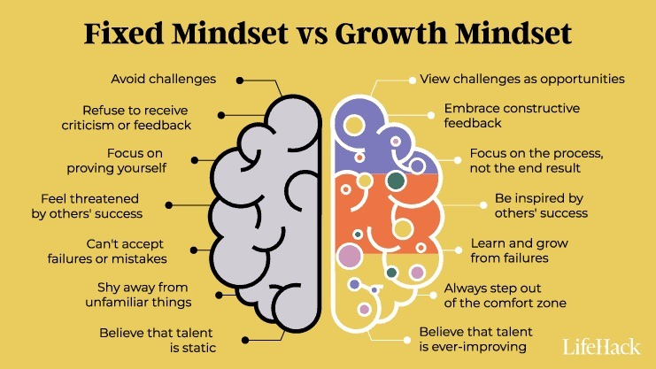

And that's on growth
Understanding neuroplasticity and growth mindsets
How do I scientifically approach learning I hear you ask? The Growth Mindset and Neuroplasticity are 2 hugely beneficial concepts to understand for anyone who wants to optimise their learning.
GROWTH MINDSETS AND THE POWER OF "YET"
Growth mindsets are relevant to anyone trying to achieve something in their life, but particularly to people trying to learn a new skill. A growth mindset is the belief that a person's capacities and talents can be improved over time. The term was coined by Stanford psychologist Carol Dweck, I found her TED talk about the topic extremely interesting. It was mind-blowing to hear how much of an impact growth mindsets had when implemented in early childhood learning.
Something that really resonated with me when learning about growth mindsets is “embracing the power of yet”. It wasn't necessarily a surprise or change in my thinking, but I definitely hadn't heard it put in those words. I think it's a really healthy way to think about anything in life, not just learning. The idea that learning is a trajectory, not just something that is fail or pass. Just because we can't do something now, doesn't mean we can't be successful in the future.
I think the main thing that I will be integrating into my learning journey, is being very mindful about how I process the meaning of effort and difficulty. Instead of seeing challenges as negative, I'm going to do my best to frame them as a way to improve. Rather than the end result I'll be focusing on effort, strategy and progress.
BRAIN GAINS
Neuroplasticty is the brain’s ability to adapt and change through the formation of new neural pathways. Understanding this concept is important because it means realising that we can always improve our knowledge, skills and habits regardless of what age we are. It encourages persistence and repetition, because we know that this will help reshape our brain.
Engaging with the concept of neuroplasticity looks different for everyone, but some of the overarching principles that are important to keep top of mind are:
- Break down learning into small chunks
- Implement deliberate and consistent practice
- Replace negative self-talk with growth-orientated thoughts
- Build habits and routines that support learning
- Be mindful of how we react to stress, learning and disctractions
On a more practical and biological note, Harvard Health Publishing shares some great ways that we an physically encourage neuroplasticity:
- 💪 Exercise improves blood-flow and supports BDNF (a protein in the brain that is crucial for learning and memory)
- 😴 Sleep consolidates neural connections created during the day
- 🥦 Dietary suppliements like omega-3s, antioxidants and hydration all support brain health
- 😓 Stress reduces neuroplasticity, relaxation techniques help preserve it
- 🫂 Social connections, conversations and collaboration help stimulate cognitive plasticity
- 🧘♂️ Meditation is shown to thicken brain regions associated with attention, memory and emotional regulation